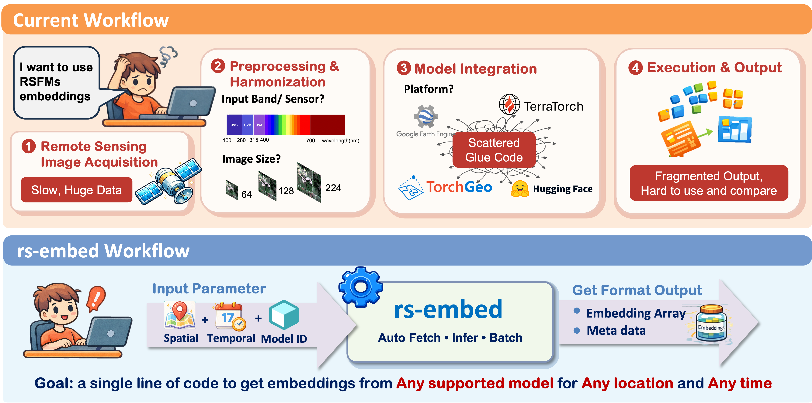

Home
One line of code to get embeddings from any Remote Sensing Foundation Model (RSFM) for any location and any time
Why This Exists¶

The remote sensing community has seen an explosion of foundation models in recent years. Yet, using them in practice remains surprisingly painful:
- Inconsistent model interfaces: imagery models vs. precomputed embedding products
- Ambiguous input semantics: patch vs. tile vs. grid vs. pooled output
- Large differences in temporal, spectral, and spatial assumptions
- No clean way to benchmark multiple models under one API
RS-Embed aims to fix this.
Goal
Provide a minimal, unified, and stable API that turns diverse RS foundation models into a simple ROI → embedding service — so researchers can focus on downstream tasks, benchmarking, and analysis, not glue code.
Start Here¶
Get something running¶
- Quickstart: install the package, run a first example, and learn the three core APIs
Choose a model¶
- Models: shortlist model IDs by task, input type, and temporal behavior
Exact signatures¶
- API: exact signatures for specs, embedding, export, and inspection
Support for a new model¶
- Extending: add a new model adapter or integrate with the registry/export flow
Why rs-embed¶
- Unified interface for diverse embedding models (on-the-fly models and precomputed products).
- Spatial + temporal specs to describe what you want, not how to fetch it.
-
Scale from single regions to massive datasets built around three functions:
get_embedding(...)get_embeddings_batch(...)export_batch(...)
Common Tasks¶
| Goal | Page | Main API |
|---|---|---|
| Get one embedding for one ROI | Quickstart | get_embedding(...) |
| Compute embeddings for many ROIs | Quickstart | get_embeddings_batch(...) |
| Build an export dataset | Quickstart | export_batch(...) |
| Compare model assumptions | Models | model tables + detail pages |
| Inspect a raw provider patch | Inspect API | inspect_provider_patch(...) |
Advanced Reading¶
- Concepts: deeper semantics for
TemporalSpec,OutputSpec, and backends - Workflows: extra task-oriented recipes beyond the quickstart path
- Advanced Model Reference: detailed preprocessing and temporal comparison tables
- Limitations: current constraints and edge cases